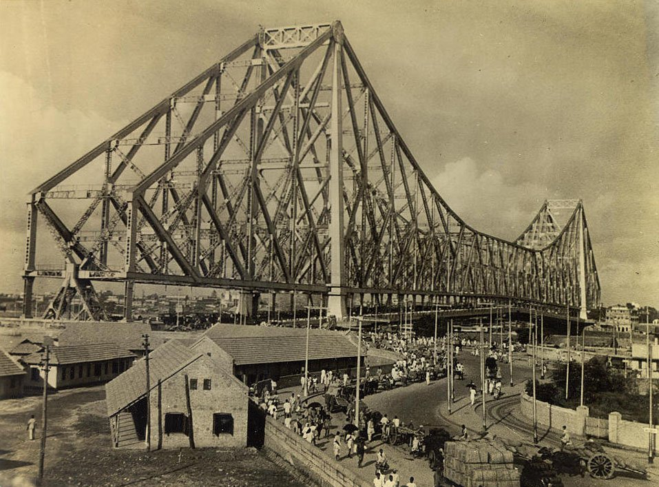
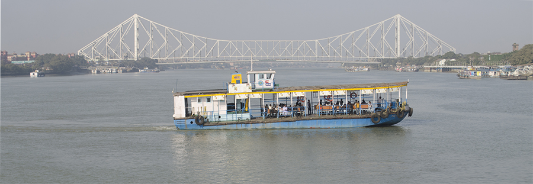

Howrah Bridge layout and structure
The Howrah Bridge is a suspension-type balanced cantilever bridge. It has a central span of 1500ft between the main towers. The anchor and cantilever arms are 325ft and 468ft long, respectively.
The suspended span has a length of 564ft. The main towers are 280ft-high above the monoliths and 76ft apart at the top. The bridge deck measures 71ft in width and features two footpaths of 15ft on either side.
The super-structure is built up with riveted sections made of a combination of high tensile and mild steel. The bridge deck descends from panel points placed in the middle of the towers, which are located in the lower chord of the main trusses through hungers.
The bridge deck consists of a 71ft carriageway and a 15ft pathway projected on both sides of the trusses and supported by a fascia girder.
The carriageway outside the tower is backed on the ground by an anchor arm. The deck system includes cross girders suspended between pairs of hungers by a pinned connection. Six rows of longitudinal stringer girders are arranged between cross girders and floor beams support transversally on top of the stringers.
These joints support a continuous pressed steel troughing system surfaced with concrete. Two main expansion joints are placed at the interfaces in the middle of the suspended span and the cantilever arms.
Eight articulation joints exist at the cantilever arms and suspended portions and separate the bridge into segments by a vertical pin connection to allow the deck’s rotational movements. The bridge deck features a longitudinal ruling gradient at each end.
The main tower is based on single monoliths with 21 chambers. The minimum vertical clearance for the carriageway is 5.8m and 8.8m for the river traffic.
Bridge maintenance and upgrades
The articulation joints at deck level were renovated in 2008, and the bridge was illuminated in colours of gold and magenta in November 2006.
Bridge operator Kolkata Port Trust (KPT) invested Rs35m in the project for laying 13km of cable, 700 lights, a new control tower and a sub-station. Around Rs27.3m was spent on the maintenance of the bridge in 2005.
The pylons, the steel-lattice inner structure, the under-deck and the pathway were fixed with white and the upper structure with blue LEDs.
Painted in June 2005, the bridge required more than 26,500l of aluminium paint to cover 23,500t of steel, occupying a surface area of 2.2mm².

Howrah Bridge lighting
Prime Minister Shri Narendra Modi launched the interactive light and sound show of the bridge in January 2020. The new Rabindra Setu decorative lighting features 650 power-efficient LEDs and spotlight fittings for programmable multi-colour lighting, including a music-syncing show.
The lights will lend a heritage look to the bridge, which is considered an engineering wonder. The new interactive show is intended to help draw visitors and locals alike.
Contractors
The bridge construction contract was assigned to the British firm Cleveland Bridge & Engineering of Darlington on the basis of a global tender invited between 1934 and 1935. The construction was supervised by the Howrah Bridge Commissioners (HRBC) under the guidance of the Calcutta Port Commissioners (CPC).
Tata Iron and Steel Company (TISCO) supplied 23,500t of steel and fabrication for the bridge construction. KPT carries out the scheduled maintenance and repair works and conducts refurbishment or restoration of distressed bridge components.